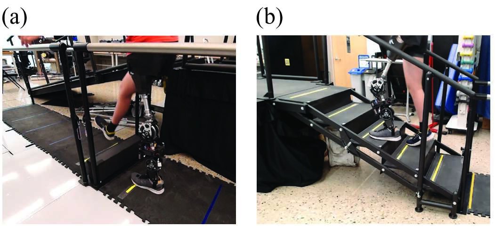

动力假肢在楼梯与障碍环境下的自动绊脚规避控制（TBME 2024）
TBME 2024 精选文章
科研


摆动相脚尖绊脚是股骨假肢使用者中常见且具有安全风险的问题， 在上下楼梯及跨越障碍物时尤为突出。 本工作在连续步态控制之上引入了一层 反应式安全控制机制： 系统能够预测脚尖净空不足的风险，并自动重塑摆动相轨迹以增加脚尖抬高， 同时保持运动的平滑性与用户舒适性。
核心思想是将绊脚规避视为一个 轨迹调整问题，而非模式切换问题。 一旦检测到风险，控制器会在线计算 最小跃度（minimum-jerk）修正轨迹， 并将其平滑融合进名义步态中，从而避免突兀动作或不稳定瞬态。
本人贡献
- 实时风险估计： 基于假肢运动学信息（如膝关节与小腿角度）， 并结合对楼梯/障碍物的 超声距离测量， 在线检测脚尖净空不足的风险。
- 最小跃度轨迹重塑： 计算平滑的修正膝关节轨迹， 并与原有运动轨迹进行融合，以保持行走舒适性与稳定性。
- 与连续控制的兼容性： 将安全层无缝集成进连续控制框架中， 使规避行为在步行与楼梯等不同运动模式下保持一致， 而非作为额外的“特例模块”。
实验结果与鲁棒性亮点
- 楼梯场景下绊脚事件显著减少： 在 специально 设计的高风险 “safe-line” 实验协议中， 整体绊脚率由约 49% 降低至约 5%， 两名受试者的降幅分别达到 87.6% 与 92.3%。
- 障碍跨越效果： 成功实现对障碍物的稳定跨越， 剩余轻微擦碰主要源于保守的膝关节速度限制， 该限制在后续调参中得到改进， 体现了真实部署中的工程权衡。
- 多活动场景下的低误触发率： 在覆盖转弯、坡道、楼梯、坐立等日常活动的离线仿真中， 引起明显额外屈曲的误触发率仅为 1.23%， 且所有额外屈曲均在脚跟着地前恢复至名义状态。
技术要点
安全关键控制
最小跃度优化
环境感知（距离测量）
轨迹融合
人体实验
鲁棒性 / 误触发分析